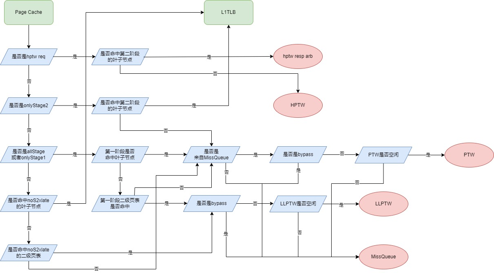

三次モジュール Page Cache
Page Cache とは、以下のモジュールを指します。 * PtwCache cache
設計仕様
- 3レベルのページテーブルを個別にキャッシュすることをサポートします。
- L1 TLB からの PTW 要求の受信をサポートします。
- Miss Queue からの PTW 要求の受信をサポートします。
- ヒット結果を L1 TLB に返し、PTW 応答を返すことをサポートします。
- ミス結果を L2 TLB に返し、PTW 要求を転送することをサポートします。
- Page Cache のリフィルをサポートします。
- ECC 検証をサポートします。
- sfence によるフラッシュをサポートします。
- 例外処理メカニズムをサポートします。
- TLB 圧縮をサポートします。
- 各レベルのページテーブルを3つのタイプに分けることをサポートします。
- 第2段階の変換要求（hptw 要求）の受信をサポートします。
- hfence によるフラッシュをサポートします。
機能
3レベルのページテーブルを個別にキャッシュする
Page Cache は「拡大版」の L1 TLB であり、名実ともに L2 TLB です。Page Cache では3レベルのページテーブルを個別にキャッシュしており、1サイクルで3レベルの情報を検索できます（H 拡張では各レベルのページテーブルがさらに VS ステージページテーブル、G ステージページテーブル、ホストページテーブルに分かれますが、これについては後の章で説明します）。Page Cache は要求されたアドレスに基づいてヒットしたかどうかを判断し、リーフノードに最も近い結果を取得します。メモリアクセス幅は 512bits、つまり8つのページテーブルエントリなので、Page Cache の1エントリには8つのページテーブルが含まれます（1つの仮想ページ番号に対して、8つの物理ページ番号と8つのパーミッションビット）。
Page Cache では、ページテーブルのレベルに応じて l1、l2、l3、sp の4つの項目に分けてキャッシュされます。l1、l2、l3 の項目には有効なページテーブルエントリのみが格納され、それぞれ1次、2次、3次のページテーブルを格納します。l1 は16エントリのフルアソシアティブ構造、l2 は64エントリの2ウェイセットアソシアティブ、l3 は512エントリの4ウェイセットアソシアティブです。sp は16エントリのフルアソシアティブ構造で、スーパーページ（リーフノードである1次、2次ページテーブル）と無効な（ページテーブルの V ビットが0、または W ビットが1で R ビットが0、またはページテーブルがアラインされていない）1次、2次ページテーブルを格納します。格納時、l1 と l2 の項目はパーミッションビットを格納する必要はありませんが、l3 と sp の項目は格納する必要があります。
Page Cache のエントリ構成を 此表 に示します。
| 項目 | エントリ数 | 構成 | 実装方法 | 置換アルゴリズム | 格納内容 |
|---|---|---|---|---|---|
| l1 | 16 | フルアソシアティブ | レジスタファイル | PLRU | 有効な1次（1GB）ページテーブル。パーミッションビットの格納は不要。 |
| l2 | 64 | 2ウェイセットアソシアティブ | SRAM | PLRU | 有効な2次（2MB）ページテーブル。パーミッションビットの格納は不要。 |
| l3 | 512 | 4ウェイセットアソシアティブ | SRAM | PLRU | 有効な3次（4KB）ページテーブル。パーミッションビットの格納が必要。 |
| sp | 16 | フルアソシアティブ | レジスタファイル | PLRU | スーパーページ（リーフノードである1次、2次ページテーブル）、無効な1次、2次ページテーブル。パーミッションビットの格納が必要。 |
Page Cache エントリに格納する必要がある情報には、tag、asid、ppn、perm（オプション）、level（オプション）、prefetch が含まれます。H 拡張では、vmid と h（3種類のページテーブルを区別するため）が追加されます。l1 と sp エントリはフルアソシアティブ構造を採用しているため、tag のビット数はそれぞれ vpnnlen（9）と 2 * vpnnlen（18）です。第2段階の変換アドレスは第1段階より2ビット多いため、tag にはさらに2ビットが必要です。l2 と l3 はセットアソシアティブ構造を採用しており、セット数と各仮想ページ番号が8つのページテーブルエントリをインデックスできることを考慮する必要があります。l2 は2ウェイセットアソシアティブなので、tag ビットは 2 * vpnnlen(18) - log2(64) - log2(8) + log2(2) = 10 ビットです。l3 は4ウェイセットアソシアティブなので、tag ビットは 3 * vpnnlen(27) - log2(512) - log2(8) + log2(4) = 17 ビットです。l3 と sp エントリはリーフノードを格納するため、perm フィールドが必要ですが、l1 と l2 エントリには不要です。perm フィールドには、RISC-V マニュアルで規定されている D、A、G、U、X、W、R ビットが格納され、V ビットは不要です。sp エントリには、ページテーブルのレベル（1次か2次か）を示す level フィールドが必要です。prefetch は、そのページテーブルエントリがプリフェッチ要求によって取得されたことを示します。vmid は VS ステージと G ステージのページテーブルでのみ使用され、asid は G ステージのページテーブルでは使用されません。h は、これら3つのページテーブルタイプを区別する2ビットのレジスタで、エンコーディングは s2xlate と一致します。Page Cache エントリに格納する必要がある情報を 此表 に、ページテーブルの属性ビットを 此表 に示します。
| 項目 | tag | asid | vmid | ppn | perm | level | prefetch | h |
|---|---|---|---|---|---|---|---|---|
| l1 | はい、9ビット+2ビット | はい | はい | はい | いいえ | いいえ | はい | はい |
| l2 | はい、10ビット+2ビット | はい | はい | はい | いいえ | いいえ | はい | はい |
| l3 | はい、17ビット+2ビット | はい | はい | はい | はい | いいえ | はい | はい |
| sp | はい、18ビット+2ビット | はい | はい | はい | はい | はい | はい | はい |
| ビット | フィールド | 説明 |
|---|---|---|
| 7 | D | Dirty。最後に D ビットがクリアされてから、この仮想ページが読み取られたことを示します。 |
| 6 | A | Accessed。最後に A ビットがクリアされてから、この仮想ページが読み取り、書き込み、またはフェッチされたことを示します。 |
| 5 | G | このページがグローバルマッピングであるかどうかを示します。このビットが1の場合、このページはグローバルマッピングであり、つまりすべてのアドレス空間に存在するマッピングです。 |
| 4 | U | このページが User Mode でアクセス可能かどうかを示します。このビットが0の場合は User Mode でアクセス不可、1の場合はアクセス可能です。 |
| 3 | X | このページが実行可能かどうかを示します。このビットが0の場合は実行不可、1の場合は実行可能です。 |
| 2 | W | このページが書き込み可能かどうかを示します。このビットが0の場合は書き込み不可、1の場合は書き込み可能です。 |
| 1 | R | このページが読み取り可能かどうかを示します。このビットが0の場合は読み取り不可、1の場合は読み取り可能です。 |
| 0 | V | このページテーブルエントリが有効かどうかを示します。このビットが0の場合、このページテーブルエントリは無効であり、ページテーブルエントリの他のビットはソフトウェアが自由に使用できます。 |
| h | 説明 |
|---|---|
| 00 | noS2xlate、ホストページテーブル |
| 01 | onlyStage1、VS ステージのページテーブル |
| 10 | onlyStage2、G ステージのページテーブル |
マニュアルでは、A/D ビットをソフトウェアとハードウェアの2つの方法で更新することが許可されています。香山はソフトウェア方式を選択しており、以下の2つの状況が検出された場合にページフォールトを発生させ、ソフトウェアによってページテーブルを更新します。
- あるページにアクセスしたが、そのページのページテーブルの A ビットが0である。
- あるページに書き込みを行ったが、そのページのページテーブルの D ビットが0である。
ページテーブルエントリの X、W、R ビットの可能な組み合わせとその意味を 此表 に示します。
| X | W | R | 説明 |
|---|---|---|---|
| 0 | 0 | 0 | このページテーブルエントリがリーフノードではないことを示し、このページテーブルを介して次のレベルのページテーブルをインデックスする必要があります。 |
| 0 | 0 | 1 | このページが読み取り専用であることを示します。 |
| 0 | 1 | 0 | 予約済み |
| 0 | 1 | 1 | このページが読み取りおよび書き込み可能であることを示します。 |
| 1 | 0 | 0 | このページが実行専用であることを示します。 |
| 1 | 0 | 1 | このページが読み取りおよび実行可能であることを示します。 |
| 1 | 1 | 0 | 予約済み |
| 1 | 1 | 1 | このページが読み取り、書き込み、および実行可能であることを示します。 |
PTW 要求の受信と結果の返却
Page Cache は L2 TLB から PTW 要求を受け取ります。L2 TLB の PTW 要求はアービタによって調停され、最終的に Page Cache に送られます。これらの PTW 要求は、Miss Queue、L1 TLB、hptw_req_arb、または Prefetcher からのものである可能性があります。Page Cache は一度に1つの要求しか処理できないため、allStage 要求についてはまず第1段階を検索します。allStage 要求については、各項目の h を検索する際に onlyStage1 のページテーブルのみを検索し、第2段階の変換は、その要求が PTW または LLPTW に送信された後に PTW または LLPTW によって処理されます。Page Cache の検索プロセスは次のとおりです。
- 0サイクル目：l1、l2、l3、sp の4項目に読み取り要求を発行し、同時に検索します。
- 1サイクル目：レジスタファイル（l1、sp 項目）および SRAM（l2、l3 項目）から読み取った結果を取得しますが、タイミングの都合上、このサイクルでは直接使用せず、次のサイクルで後続の操作を行います。
- 2サイクル目：Page Cache の各項目に格納されている tag と受信した要求の tag を比較し、各項目の h レジスタと受信した s2xlate（allStage は onlyStage1 の検索に変換）を比較し、l1、l2、l3、sp の各項目で同時にマッチング検索を行います。また、ECC チェックも行います。
- 3サイクル目：l1、l2、l3、sp の4項目のマッチング結果と ECC チェックの結果をまとめます。
上記の Page Cache の検索プロセスでリーフノードが見つかった場合、L1 TLB に返されます（allStage 要求の場合、第1段階でヒットすると PTW に処理を依頼します）。それ以外の場合は、状況に応じて LLPTW、PTW、HPTW、または Miss Queue に要求を転送します。
L2 TLB への PTW 要求の送信
Page Cache は、状況に応じて LLPTW、PTW、HPTW、または Miss Queue に要求を転送します。
- noS2xlate、onlyStage1、および allStage の場合、Page Cache がリーフノードにヒットせず、2次ページテーブルにヒットした場合（onlyStage1 および allStage の場合は第1段階の2次ページテーブルにヒット）、かつこの PTW 要求がバイパス要求でない場合、Page Cache は要求を llptw に転送します。
- noS2xlate、onlyStage1、および allStage の場合、Page Cache がリーフノードにヒットせず、2次ページテーブルにもヒットしない場合（onlyStage1 および allStage の場合は第1段階の2次ページテーブルにヒットしない）、要求を Miss queue または PTW に転送する必要があります。この要求がバイパス要求でなく、かつ Miss queue から直接来たものであり、PTW がアイドル状態の場合、PTW 要求を PTW に転送します。allStage 要求の場合、第1段階の変換でリーフノードにヒットすると、最後の第2段階の変換のために PTW に送信されます。onlyStage2 要求の場合、第2段階のリーフノードにヒットしない場合も、後続の変換のために PTW に送信されます。
- この要求が PTW または LLPTW から送信された第2段階の変換要求（hptwReq）である場合、ヒットした場合は hptw_resp_arb に送信され、ヒットしなかった場合は HPTW に処理を依頼します。HPTW がビジー状態の場合、Page Cache はブロックされます。
- Page Cache がリーフノードにヒットせず、かつこの要求がプリフェッチ要求でも hptwReq 要求でもない場合、以下の3つの条件のいずれかを満たすと miss queue に入ることができます。
- この要求がバイパス要求である。
- この要求が2次ページテーブルにヒットしないか、第1段階の変換でヒットし、かつこの要求が L1 TLB からのものであるか、PTW が Page Cache の要求を受け取れない。
- この要求が2次ページテーブルにヒットしたが、LLPTW が要求を受け取れない。
ここで特に説明が必要なのは、1、2、3、4 の4点は並列化されたプロセスであり、Page Cache が転送する各要求は、必ず1、2、3、4 のいずれかの条件を唯一満たしますが、1、2、3、4 は別々に判断され、両者の間に前後関係はありません。転送要求の状況をより明確に説明するために、シリアル化されたフローチャートでさらに説明しますが、実際にはハードウェア言語で記述されるものは必ず並列化されたプロセスであり、シリアルな関係は存在しません。シリアル化されたフローチャートを 此图 に示します。

キャッシュのリフィル
PTW または LLPTW が mem に送信した PTW 要求が応答を受け取ると、同時に Page Cache にリフィル要求を送信します。Page Cache に渡される情報には、ページテーブルエントリ、ページテーブルのレベル、仮想ページ番号、ページテーブルタイプなどが含まれます。これらの情報が Cache に渡されると、リフィルするページテーブルのレベルとページテーブルの属性ビットに基づいて、l1、l2、l3、または sp の項目に書き込まれます。ページテーブルが有効な場合、ページテーブルのレベルに応じて l1、l2、l3、sp の4項目に書き込まれます。ページテーブルが無効で、かつ1次または2次のページテーブルである場合、sp 項目に書き込まれます。置換される Page Cache 項目については、ReplacementPolicy を介して置換戦略を選択できます。現在、香山の Page Cache は PLRU 置換戦略を採用しています。
バイパスアクセスのサポート
Page Cache の要求がミスしたが、同時に要求されたアドレスにデータが書き込まれている場合、Page Cache の要求はバイパスされます。この場合、書き込まれているデータが直接 Page Cache の要求に渡されるわけではなく、Page Cache は L2 TLB にミス信号を送信すると同時に、この要求がバイパス要求であることを示すバイパス信号を L2 TLB に送信し、結果を得るために再度 Page Cache にアクセスする必要があります。バイパスされた PTW 要求は PTW には入らず、直接 MissQueue に入り、次の Page Cache アクセスで結果が得られるのを待ちます。ただし、hptw req（PTW および LLPTW からの）の第2段階の変換要求もバイパスされる可能性がありますが、hptw req は miss queue には入らないため、Page Cache への重複した書き込みを避けるために、Page Cache が HPTW に送信する信号には bypassed 信号があります。この信号が有効な場合、この要求が HPTW に入って行われるメモリアクセスの結果は Page Cache にリフィルされません。
ECC 検証のサポート
Page Cache は ECC 検証をサポートしており、l2 または l3 項目にアクセスする際に同時に ECC チェックが行われます。ECC チェックでエラーが報告された場合、例外は報告されず、代わりに L2 TLB にこの要求のミス信号が送信されます。同時に、Page Cache は ECC エラーが発生した項目をフラッシュし、PTW 要求を再送信します。その他の動作は Page Cache ミス時と同じです。ECC チェックには secded 戦略が採用されています。
sfence フラッシュのサポート
sfence 信号が有効な場合、Page Cache は sfence の rs1 および rs2 信号と現在の仮想化モードに基づいて Cache 項目をフラッシュします。Page Cache のフラッシュは、対応する Cache line の v ビットを0にすることで行われます。l2、l3 項目は SRAM で格納されているため、そのサイクルで asid 比較ができないため、l2、l3 のフラッシュでは asid は無視されます（vmid と asid の処理は同じです）。sfence 信号に関する詳細については、RISC-V マニュアルを参照してください。仮想化環境では、sfence は VS ステージ（第1段階の変換）のページテーブルをフラッシュします（このとき vmid を考慮する必要があります）。非仮想化環境では、sfence は G ステージ（第2段階の変換）のページテーブルをフラッシュします（このとき vmid は考慮しません）。
例外処理のサポート
Page Cache では ECC 検証エラーが発生する可能性があります。この場合、Page Cache は現在の項目を無効にし、ミス結果を返して再度 Page Walk を行います。詳細については、このドキュメントの第6部「例外処理メカニズム」を参照してください。
TLB 圧縮のサポート
TLB 圧縮をサポートするため、Page Cache が 4KB ページにヒットした場合、連続する8つのページテーブルエントリを返す必要があります。実際には、Page Cache の各項目にはメモリアクセス幅が 512bits であるため、もともと8つのページテーブルが含まれており、これら8つのページテーブルを直接返すだけで済みます。L1TLB とは異なり、L2TLB では H 拡張でも TLB 圧縮が使用されます。
各レベルのページテーブルを3つのタイプに分けることをサポート
H 拡張には、vsatp、hgatp、satp が管理する3種類のページテーブルがあります。Page Cache には、これら3種類のページテーブルを区別するために h レジスタが追加されています。onlyStage1 は vsatp に関連し、onlyStage2 は hgatp に関連し（このとき asid は無効）、noS2xlate は satp に関連します（このとき vmid は無効）。
第2段階の変換要求（hptw 要求）の受信をサポート
L2TLB の PTW と LLPTW は第2段階の変換要求（isHptwReq 信号で示される）を送信します。この種の要求はまず Page Cache で検索されます。検索プロセスは onlyStage2 の要求と同じで、onlyStage2 タイプのページテーブルのみを検索しますが、この種の要求はヒットしたかどうかに応じて hptw_resp_arb または HPTW に送信されます。Page Cache の hptwReq の応答信号には id 信号があり、この信号は PTW と LLPTW のどちらに応答を返すかを判断するために使用されます。応答信号には bypassed 信号があり、この信号はこの要求がバイパスされたことを示します。この要求が HPTW で変換される場合、HPTW がメモリアクセスで取得したページテーブルはすべて Page Cache には書き込まれません。HptwReq 要求も l1Hit と l2Hit の機能をサポートしています。
hfence フラッシュのサポート
hfence 命令は非仮想化モードでのみ実行できます。このタイプの命令は2つあり、それぞれ VS ステゲページテーブル（第1段階の変換、h フィールドは onlyStage1）と G ステージページテーブル（第2段階の変換、h フィールドは onlyStage2）をフラッシュします。hfence の rs1 と rs2、および追加された vmid と h フィールドに基づいてフラッシュする内容を判断します。同様に、asid と vmid は l3 と l2 では SRAM に格納されているため、l3 と l2 をフラッシュする際には vmid と asid は考慮されません。さらに、l3 のフラッシュの実装については、簡単な方法を採用し、VS または G ステージのページテーブルを直接フラッシュします（将来的には、必要に応じて addr があるセットをさらに細かくフラッシュすることも可能です）。
全体ブロック図
Page Cache の本質は Cache であり、前述の通り Page Cache の内部実装については詳しく説明しましたので、Page Cache の内部ブロック図はあまり参考になりません。Page Cache と L2 TLB の他のモジュールとの接続関係については、5.3.3 節を参照してください。
インターフェースリスト
Page Cache の信号リストは、主に次の3つのカテゴリに分類できます。
- req：arb2 は Page Cache に PTW 要求を送信します。
- resp：Page Cache が L2 TLB に返す PTW 応答。Page Cache は PTW、LLPTW、Miss Queue、HPTW に要求を送信する可能性があります。mergeArb と hptw_resp_arb に応答を送信します。
- refill：Page Cache は mem から返されたリフィルデータを受け取ります。
詳細については、インターフェースリストのドキュメントを参照してください。
インターフェースタイミング
Page Cache は valid-ready 方式で L2 TLB の他のモジュールと対話します。関連する信号は細かく、特に注意すべきタイミング関係はないため、ここでは詳述しません。